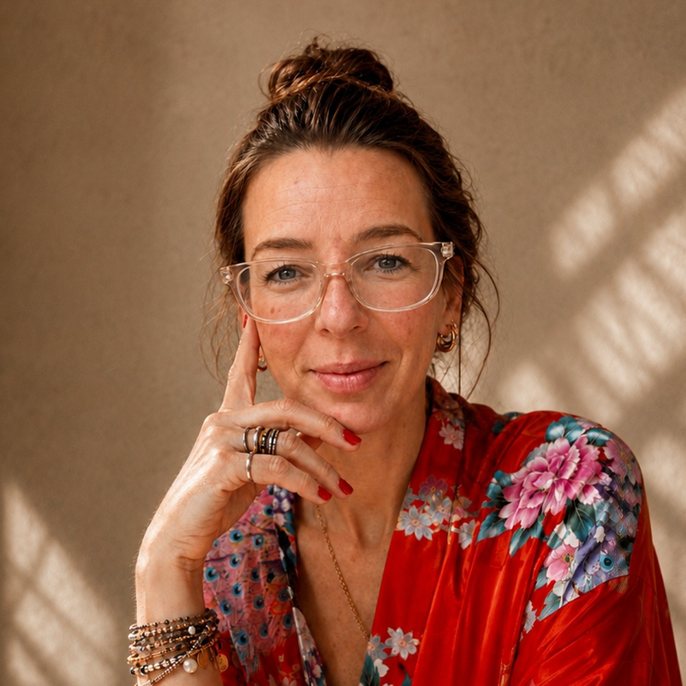
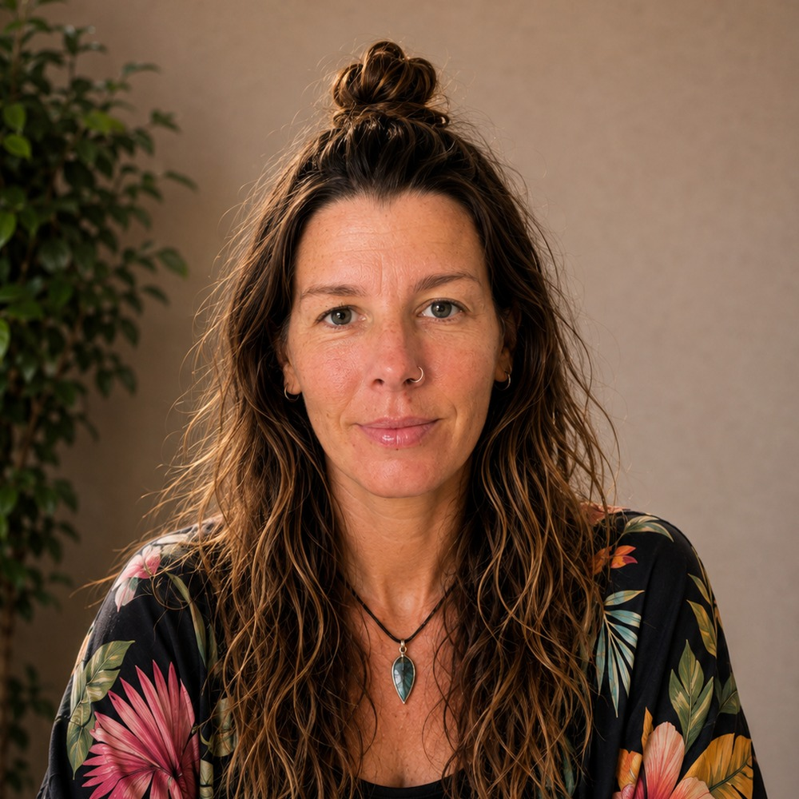

About NAEL
NAEL was founded by two sisters with different professional backgrounds, but a shared approach to creative work.
Our strengths are complementary. One leads the creative direction and visual development, while the other manages client relationships, communication and project coordination. Together, this creates a direct and streamlined way of working, with creative decisions and client requirements closely connected throughout the process.
Being sisters adds another dimension to that collaboration. We know each other's strengths, work closely and communicate naturally, allowing us to challenge ideas, refine details and make decisions efficiently.
What matters most to us is precision. We care about the idea behind a project, the way it is communicated and how every visual element supports it. We are drawn to strong concepts, thoughtful details and design that feels intentional rather than simply decorative.
Whether the project is focused on branding, visual communication, design or creative development, our aim is the same: to create work where the concept and its visual expression are equally considered.
That balance is at the heart of NAEL.

Co-Founder & Client Director
Nadine leads client relationships and project management at NAEL, bringing extensive international experience in communication, coordination and business development.
Her career has taken her through international tourism, tour guide management, hospitality and field sales, giving her years of experience working with clients, teams and businesses in different cultural and professional environments.
She began in international tourism as a tour guide before moving into tour guide management, where she coordinated and managed teams. She later worked in front office and guest relations within the hotel industry, followed by several years in field sales.
This diverse background has shaped a highly practical approach to client and project management. Nadine is experienced in coordinating requirements, establishing clear communication, managing timelines and keeping projects moving efficiently from one stage to the next.
At NAEL, she is responsible for the client relationship and the operational side of each project, from the initial enquiry through to completion. She ensures that communication stays clear, expectations are aligned, and every project is handled professionally and efficiently.
Her strength lies in bringing structure, commercial awareness and international client experience to the creative process, making sure that great creative work is supported by equally strong project management.

Co-Founder & Creative Director
Eliane's path into design started early, with experience in advertising and graphic design agencies before moving into freelance work, where she developed brand identities, packaging, and visual concepts across different creative environments and markets.
She then spent many years building a life and creative practice on her own terms, alongside family life, independent projects, illustration, and design. Today, she brings that professional design foundation together with a broader perspective shaped by life beyond the industry.
As Co-Founder and Creative Director of NAEL, Eliane leads the agency's creative direction, combining strong visual thinking with modern tools, including AI-assisted workflows, to bring ideas from concept through to execution.
Have a project in mind, or want to collaborate? We'd love to hear from you.
Thank you, your message has been sent. We'll get back to you soon.